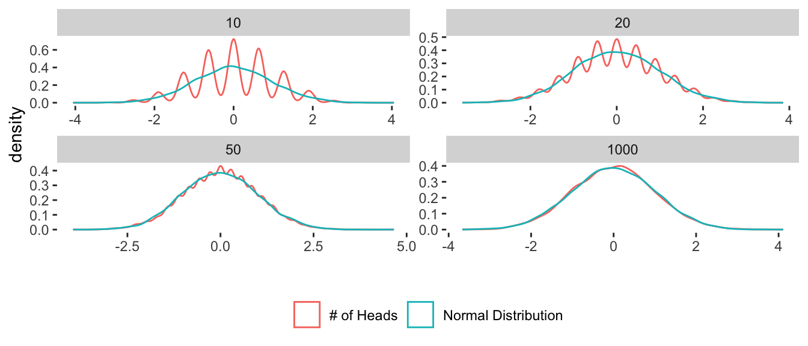
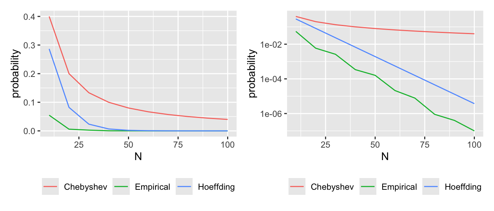
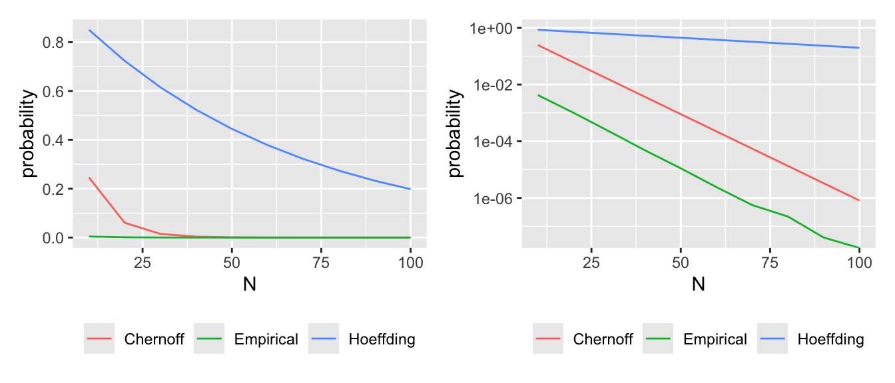

Warning: package 'DescTools' was built under R version 4.4.15 Inequalities
5.1 왜 concentration inequality가 필요한가?
High-Dimensional Probability 책에 있는 동전 던지기 예제 생각
\(i\)번째 동전던지기: 앞면이 나오면 1, 뒷면이 나오면 0인 Bernoulli random variable로 간주 가능
\(N\)번 던졌을 때 나온 앞면의 수: \(S_N = \sum_i X_i\)
de Moivre-Laplace theorem (Binomial의 CLT) \[ Z_N \stackrel{D}{\rightarrow}\mathcal{N}(0,1) \] 이때 \[ Z_N = \frac{S_N - N_p}{\sqrt{Np (1-p)}} \]

Q. \(N\)번 시행 시 \(\frac{3}{4}\)이상 앞면이 나올 확률을 구하고 싶다.
Gaussian density는 exponential decay하는데, \(Z_N\)이 분포수렴하는 속도는 훨씬 느림
CLT의 quantitative version인 Berry-Essen CLT를 보면 \[ |P\{Z_n \geq t\} - P\{Z \geq t\} | \leq \frac{C}{\sqrt{N}} \] 이때 \(C\)는 상수이며, convergence의 order가 \(\frac{1}{\sqrt{N}}\)임을 (아래 그림에 녹색으로 표시) 확인 가능
5.2 Markov inequality
Theorem 5.1 (Markov inequality) 음이 아는 확률변수 \(X\)에 대해 \[ P\{ X\geq t\} \leq \frac{E[X]}{t} \]
Proof
확률공간 \((\Omega, \Sigma, P)\)을 생각하자. \[ EX = \int X dP \geq \int_{\{X\geq t\}} X dP \geq t \int_{\{X\geq t \}}dP \geq t\cdot P\{ X\geq t\} \]
Remark
마르코프 bound는 매우 약한 (즉 true probabilty로의 수렴이 느린) bound
그러나 \(X\)에 대한 제약조건이 없음 (기댓값 계산 필요, 음이 아닌 확률변수)
5.3 Chebyshev inequality
Theorem 5.2 (Chebyshev inequality) 어떤 확률변수 \(X\)에 대해 \[ P\{|X-E(X)|\geq t \}\leq \frac{\text{Var}(X)}{t^2} \]
Proof
\(|X-E(X)|\geq t\)를 제곱한 후 마르코프 부등식을 적용 \[ P\{ |X-E(X)|^2 \geq t^2\} \leq \frac{E[(X-E(X))]^2}{t^2} = \frac{\text{Var}(X)}{t^2} \]
Remark
- 체비세프 부등식을 쓰려면 분산이 정의되어야 함
5.4 Hoeffding’s Inequality
(드디어) \(\sum_i X_i\)에 대한 exponential bound를 줌
그러나 독립 가정이 필요
단순한 케이스로 먼저 \(X_1, \ldots, X_N\)이 symmetric Bernoulli라고 하자. 이는 즉 반반의 확률로 1 또는 -1을 갖는 확률변수
Theorem 5.3 (Symmetric Bernoulli에서의 Hoeffding’s inequality) \(X_1, \ldots, X_N\)이 symmetric Bernoulli 확률변수라고 하자. 어떤 \(t\geq 0\)에 대해 \(a \in \mathbb{R}^n\)이 존재해 \[ P\{ \sum_{i=1}^N a_i X_i \geq t \} \leq \exp \Big( - \frac{t^2}{2\|a\|^2} \Big) \]
Proof
마르코프 부등식을 적용하면 다음과 같다. \[ P\{ \sum_{i=1}^N a_i X_i \geq t \} = P \{ \exp (\lambda \sum_{i=1}^N a_i X_i) \geq e^{\lambda t} \} \leq e^{-\lambda t}E\{ \exp (\lambda \sum_{i=1}^N a_i X_i) \} \] 독립성에 의해 다음과 같다. \[ E\{ \exp (\lambda \sum_{i=1}^N a_i X_i) \} = E \{ \prod_{i=1}^N \exp (\lambda a_i X_i) \} = \prod_{i=1}^N E\{ \exp (\lambda a_i X_i)\} \] \(X_i\)를 \(1/2\)의 확률로 -1과 1을 갖는 확률변수라고 제한했으므로, 위의 기댓값을 쉽게 구할 수 있다. \[ E\{ \exp (\lambda a_i X_i)\} = \frac{e^{\lambda a_i }+ e^{-\lambda a_i}}{2}\leq e^{\lambda^2 a_i^2 / 2} \] 지수함수의 테일러 급수 전개를 이용하면 \[ e^{x}=\sum_{k=0}^{\infty}\frac{x^k}{k!},\quad{} \frac{e^{x}+e^{-x}}{2} =\sum_{k=0}^{\infty}\frac{x^{2k}}{(2k)!}, \quad{} e^{x^2/2}=\sum_{k=0}^{\infty}\frac{x^{2k}}{2^k k!},\quad{} \Longrightarrow\quad{} \frac{e^{x}+e^{-x}}{2} \leq e^{x^2/2}. \] \(\|a\|^2=1\)이라 두고 위의 결과를 대입해보자. \[ P\{ \sum_{i=1}^N a_i X_i \geq t \} \leq e^{-\lambda t}(\prod_{i=1}^N e^{\lambda^2 a_i^2/2})\leq e^{-\lambda t}(e^{\lambda^2 \sum_{i=1}^N a_i^2/2}) = e^{-\lambda t}(e^{\lambda^2/2}) = e^{\lambda^2/2 - \lambda t}. \] 위의 부등식은 모든 \(\lambda\)에 대해 성립하고, \(\lambda=t\)일 때 최소화된다. 따라서 \[ P\{ \sum_{i=1}^N a_i X_i \geq t \} \leq e^{-t^2/2}. \] 따라서, homogeneity에 의해 \(\|a\|=1\)을 가정하면 다음과 같다. \[ P \{ \sum_{i=1}^N \frac{a_i}{\| a\|}X_i \geq \frac{t}{\|a\|} \} \leq e^{-\frac{t^2}{2\|a\|^2}}. \]
\(X_i\)가 1 또는 0을 갖는 베르누이 확률변수라고 할 때, \(Y_i = 2(X_i - \frac{1}{2})\)로 놓으면 \(Y_i\)는 symmetric Bernoulli 확률변수임 \[ P\{ \sum_i X_i > t\} = P \{ \sum_i (\frac{Y_i}{2}+ \frac{1}{2}) > t \} = P\{\sum_i Y_i > 2t - N \} \leq \exp (-\frac{(2t-N)^2}{2N}) \] 여기서 \(a=\begin{bmatrix} 1,1,\ldots, 1 \end{bmatrix}\)로 두면 \(\|a\|_2^2=N\)이 된다. 따라서 \[ P\{\sum_i X_i > \frac{3N}{4} \}\leq \exp (- \frac{(\frac{3N}{2}-N)^2}{2N}) = \exp (-\frac{N}{8}) \]

Theorem 5.4 (Hoeffding’s inequality) \(X_1, \ldots, X_N\)이 독립인 확률변수이고, \(X_i \in [m_i, M_i]\) almost surely라고 하자. 그러면 어떤 \(t>0\)에 대해 \[ P \{\sum_{i=1}^N (X_i - E(X_i))\geq t \} \leq \exp (- \frac{2t^2}{\sum_{i=1}^N (M_i - m_i)^2}) \]
Proof
앞에서처럼 \(\lambda\)를 곱하고 제곱근을 취한 다음 마르코프 부등식을 이용한다 \[ \begin{align*} P\{\sum (X_i - E(X_i)) \geq t \} &= P \{\exp (\lambda \sum (X_i - E(X_i)))\geq e^{\lambda t} \}\\ &\leq E \{\exp (\lambda \sum (X_i - E(X_i)))\} e^{-\lambda t}\\ &= \prod_i E\{\exp (\lambda (X_i - E(X_i))) \}e^{-\lambda t}. \end{align*} \] 그러면 기댓값의 bound만 찾아주면 된다. 여기서는 \(X_i\)와 독립인 copy인 \(X_i'\)를 생각하는 symmetrization 기법을 이용한다. \[ \begin{align*} E\{\exp (\lambda \sum (X_i - E(X_i)) ) \} &= E\{\exp (\lambda \sum (X_i - E(X_i')) ) \} \\ &= E_{X_i} \{ \exp (E_{X_i'} \lambda \sum (X_i - X_i')) \}\\ &\leq E_{X_i} E_{X_i'} \{ \exp (\lambda \sum (X_i - X_i')) \}\\ &= E\{ \exp (\lambda \sum (X_i - X_i')) \}. \end{align*} \] 여기서 exponential이 convex이므로 Jensen의 부등식을 적용하였다. 여기서 \(X_i - X_i'\)는 0 근처에서 symmetric이고 이것의 분포는 \(S(X_i - X_i')\)와 같다. 이때 \(S\)는 -1, 1을 동일한 확률로 갖는 Rademacher variable이다. \[ \begin{align*} E\{\exp (\lambda \sum (X_i - E(X_i)) ) \} &\leq E_{X_i,X_i'} \{ E_S \exp (\lambda \sum S(X_i - X_i')) \}\\ &\leq E_{X_i,X_i'} \{ \exp (\lambda^2 (X_i - X_i')^2/2) \}\\ &\leq \exp (\lambda^2 (M_i - m_i)^2/2). \end{align*} \] 이때 첫 번째 부등식은 exponential의 테일러 전개를, 두 번째 부등식은 \(X_i\)의 boundedness를 이용하였다. \[ \begin{align*} P\{\sum (X_i - E(X_i)) \geq t \} &= \prod_i E\{\exp (\lambda (X_i - E(X_i))) \}e^{-\lambda t}\\ &= \prod_i \exp (\lambda^2 (M_i - m_i)^2/2)e^{-\lambda t}\\ &= \exp (\lambda^2 \sum_i (M_i - m_i)^2/2 -\lambda t)\\ &\leq \exp (\frac{2t^2}{\sum_i (M_i -m_i)^2}). \end{align*} \] 여기서 마지막 부등식은 exponent를 최소화하는 \(\lambda\)를 잡았다.
5.5 Chernoff Bounds
베르누이 확률변수에 대한 Hoeffding bound는 \(p=0.5\)일 때에는 잘 작동하지만, 작거나 큰 \(p\)에 대해서는 잘 작동하지 않음
\(X_i \sim \text{Bernoulli}(p)\)라고 하고 \(S_N = \sum_{i=1}^N X_i\)라고 두자. 그리고 Hoeffding의 부등식을 이용하여 \(S_N > 10pN\)의 bound를 구해보자. \[ P \{ \sum_i X_i > 10pN \} = P\{ \sum_i X_i - pN > 9pN \}\leq \exp (-\frac{2(9pN)^2}{N}) = \exp (-182p^2 N). \] 식을 보면 Binomial random variable이 평균보다 9배 클 확률의 bound를 계산함
Theorem 5.5 (Chernoff inequality) \(X_1, \ldots, X_N\)이 모수 \(p_i\)를 갖는 독립인 베르누이 확률변수라 하자. \(S_N = \sum_i X_i\)이고 \(\mu = E(S_N)\)이라고 하자. 그러면 \(t>\mu\)에 대해 \[ P \{ S_N \geq t \} \leq \exp (-\mu) \Big( \frac{e\mu}{t} \Big)^t. \]
Proof
다시 \(\lambda\)를 곱하고 마르코프 부등식을 적용하자. \[ P\{ S_N \geq t \} \leq E\{ \exp (\lambda \sum_{i} X_i) \}e^{-\lambda t} = \prod_i E\{ \exp (\lambda X_i) \}e^{-\lambda t}. \] \(1+x \leq e^{x}\)라는 부등식을 이용하면 다음과 같다. \[ P\{ S_N \geq t \} \leq e^{\lambda}p_i + (1-p_i) = 1 + (e^{\lambda} - 1)p_i \leq \exp (p_i (e^\lambda - 1)). \] 이것을 정리하면 다음과 같다. \[ \begin{align*} P\{ S_N \geq t \} &\leq \prod_i \exp (p_i (e^\lambda -1))e^{-\lambda t}\\ &\leq \exp \Big( (e^\lambda - 1)\sum_i p_i \Big) e^{-\lambda t}\\ &\leq \exp ((e^{\lambda}-1)\mu) e^{-\lambda t}. \end{align*} \] 여기서 \(\lambda\)를 고를 수 있는데, \(\lambda = \log (t/mu)\)로 잡으면 다음과 같다. \[ \begin{align*} P\{ S_N \geq t \} &\leq \exp \Big( (\frac{t}{\mu}-1)\mu \Big) \Big( \frac{\mu}{t} \Big)^t\\ &= \exp (t-\mu) \Big( \frac{\mu}{t} \Big)^t\\ &=\exp (-\mu) \Big( \frac{e\mu}{t} \Big)^t. \end{align*} \]
- 다시 앞 예제에 Chernoff 부등식을 적용하면 \[ P \{\sum_i X_i > 10pN \} \leq \exp (-p N) \Big( \frac{epN}{10pN}\Big)^{10pN} = \exp (-p N) \Big( \frac{e}{10}\Big)^{10pN}. \]

5.6 Gaussian tails and MGF
\(X\)가 Gaussian일 때 pdf \[ p(x) = \frac{1}{\sqrt{2\pi \sigma^2}} \exp \Big( - \frac{(x-\mu)^2}{2\sigma^2} \Big), \quad{} x \in \mathbb{R} \]
특별히 standard normal의 pdf를 다음과 같이 두기로 함 \[ \phi (x) = \frac{1}{\sqrt{2\pi}}\exp \Big( -\frac{x^2}{2} \Big) \]
Bounded support: \(P(|X-\mu|\leq 3\sigma)\) 등의 확률 구할 때 사용
Proposition 5.1 (Mills inequality) Gaussian density tail의 decay 속도를 알려줌
\(X\sim \mathcal{N}(\mu, \sigma^2)\)일 때 \(t>0\)에 대해 \[ P(|X-\mu | >t) \leq \sqrt{\frac{2}{\pi}}\frac{e^{-\frac{t^2}{2\sigma^2}}}{t}. \tag{5.1}\]
특별히 \(X\sim \mathcal{N}(0,1)\)일 때 \(t>0\)에 대해 \[ P(|X | >t) \leq \frac{2\phi (t)}{t} \]
\(\phi(x)\)를 이용해 특별히 \(X\sim \mathcal{N}(0,\sigma^2)\)일 때 \(t>0\)에 대해 \[ P(|X | >t) \leq 2\frac{\sigma}{t}\phi \Big(\frac{t}{\sigma} \Big) = \sqrt{\frac{2}{\pi}}\frac{\sigma}{t}\exp \Big( - \frac{t^2}{2\sigma^2}\Big). \]
Proof
우선 unit variance일 경우, \(X\)가 symmetric around origin임을 이용하여 \[ P(|X|>t) = 2P(X>t). \] 마르코프 부등식의 증명과 비슷하게 \[ \begin{align*} t\cdot P(|X|>t) &= t \int_t^{\infty} \phi (x) dx\\ &\leq \int_t^{\infty} x \phi(x)dx\\ &= \int_t^{\infty} \frac{1}{\sqrt{2\pi}}x \exp \Big( -\frac{x^2}{2}\Big) dx\\ &= \frac{1}{\sqrt{2\pi}}\int_{t}^{\infty}-\frac{\partial}{\partial x}\exp \Big( -\frac{x^2}{2}\Big)dx\\ &= \frac{1}{\sqrt{2\pi}}\exp \Big( - \frac{t^2}{2} \Big). \end{align*} \]
일반적인 케이스의 경우 \(X/\sigma \sim \mathcal{N}(0,1)\)이고 \[ P(|X|>t) = P \Big( \Big\vert\frac{X}{\sigma}\Big\vert > \frac{t}{\sigma} \Big) \] 로부터 유도됨
Proposition 5.2 (Gaussian의 concentration inequality)
- Mills inequality의 application
\(X_i \sim\mathcal{N}(0,\sigma^2)\) (이때 확률변수들은 독립이 아니어도 됨)일 때, \(t>0\)에 대해 \[ P(\max_{1\leq i \leq n} |X_i | >t) \leq 2n \frac{\sigma}{t}\phi \Big( \frac{t}{\sigma} \Big). \]
Proof
Mills 부등식에 union bound를 쓰면 된다고 함
Proposition 5.3 (Max of Gaussian random variables의 upper bound)
- Mills inequality의 application, lower bound도 같은 rate로 유도 가능
\(X_i \sim\mathcal{N}(0,\sigma^2)\) (이때 확률변수들은 독립이 아니어도 됨)일 때, \[ E[\max_{1\leq i \leq n}X_i] \leq \sigma \sqrt{2\log n} \] 이고 \[ E[\max_{1\leq i \leq n} |X_i|] \leq \sigma \sqrt{2\log 2n} \]
Proof
- \(s>0\)에 대해 \[
\begin{align*}
E[\max_{1\leq i \leq n}X_i] &= \frac{1}{s}E[\log (\exp (s \max_{1\leq i \leq n} X_i))]\\
&\stackrel{(a)}{\leq} \frac{1}{s} \log (E[\exp (s\max_{1\leq i \leq n}X_i)])\\
&\stackrel{(b)}{=} \frac{1}{s}\log(E[\max_{1\leq i \leq n}\exp (sX_i)])\\
&\stackrel{(c)}{\leq} \frac{1}{s}\log (\sum_{i=1}^n E[\exp (s X_i)])\\
&\stackrel{(d)}{=} \log \Big(\sum_{i=1}^n \exp \Big( \frac{s^2\sigma^2}{2} \Big) \Big)\\
&= \frac{\log n}{s} + \frac{s^2 \sigma^2}{2}.
\end{align*}
\] 여기서
- (a): Jensen 부등식
- (b): \(\exp (\cdot)\) 함수의 monotonicity
- (c): \(\max\)의 정의로부터
- (d): Gaussian r.v.의 MGF로부터
\(s=\sqrt{2\log n}/\sigma\)로 놓아 upper bound를 minimize한다고 함
5.7 Sub-Gaussian
앞서 Chernoff appraoch로 얻어지는 tail bound의 form은 MGF의 growth rate에 depend됨을 암
따라서 tail bound study에서는 확률변수들을 MGF에 따라 분류하는 것이 자연스러운 생각
또한 Proposition 5.3 의 증명을 보면, (d)를 제외한 나머지 부분에서는 Gaussian의 성질이 쓰이지 않고 있음. 즉 \(E[\exp (s X_i)]\leq \exp ( \frac{1}{2}s^2 \sigma^2)\)을 만족하는 확률변수 \(X_i\)들에 대해서는 Proposition 5.3 의 결과가 성립할 것임
Definition 5.1 (Sub-Gaussian) 어떤 확률변수 \(X\in \mathbb{R}\)이 \(E(X)=0\)이고 이것의 MGF가 \[ E[\exp (sX)] \leq \exp \Big( \frac{\sigma^2 s^2}{2} \Big), \forall s \in \mathbb{R} \] 일 때 \(X \sim \text{subG}(\sigma^2)\)이라고 한다.
Remark
- Sub-Gaussian random variable은 클래스가 큼
Example 5.1 (Sub-Gaussian ditributions의 예시)
\(X\)가 equal prob로 \(\pm 1\)을 갖는 Rademacher random variable이라 하면 \[ E[\exp (sX)] = \frac{1}{2}e^{-s} + \frac{1}{2}e^s = \cosh s \leq \exp (\frac{1}{2}s^2) \] \(X \sim \text{subG}(1)\)
\(X \sim \text{Unif}[-a,a]\)라 하면 \(s\neq 0\)에 대해 (출처) \[ \begin{align*} E[\exp (sX)] &= \frac{1}{2as}[e^{as} - e^{-as}]\\ &= \sum_{n=0}^{\infty} \frac{(as)^{2n}}{(2n+1)!} \leq \sum_{n=0}^{\infty} \frac{(as)^{2n}}{n!2^n} \end{align*} \] \(X\sim \text{subG}(a)\)라고 함
\(X\)가 \(E[X]=0\), \(|X|<1\) a.s인 확률변수라 하면 \[ E[\exp (sX)] \leq \cosh s, \quad{} \forall s \in \mathbb{R} \] 이므로 \(X\sim \text{subG}(1)\)
위의 따름정리로부터 \(X\)가 \(E[X]=0\), \(|X|<b\) a.s인 확률변수라 하면 \(X\sim \text{subG}(b)\)
\(X\)가 구간 \([a,b]\)에서 zero mean을 갖는 확률변수이면, \(X\sim \text{subG}(\frac{b-a}{2})\)
\(X\sim \text{subG}(\sigma^2)\)이면 \(\alpha \in \mathbb{R}\)에 대해 \(\alpha X \sim \text{subG}(|\alpha|\sigma)\)
\(X_1, X_2\)가 각각 \(X_1\sim \text{subG}(\sigma_1)\), \(X_2\sim \text{subG}(\sigma_2)\)이면 \(X_1 + X_2\sim \text{subG}(\sqrt{\sigma_1^2+\sigma_2^2})\)
5.7.1 Lipschitz functions of Gaussian variables
Definition 5.2 (Lipschitz function) 어떤 함수 \(f:\mathbb{R}^d \rightarrow \mathbb{R}\)이 \[ |f(x)-f(y)|\leq L \| x-y\|_2 ,\quad{} \forall x,y\in\mathbb{R}^d \] 를 만족하면 L-Lipshitz with respect to the Euclidean norm이라 한다.
다음 정리는 any Lipschitz function of a Gaussian random variable은 \(L\)-sub-Gaussian임을 보여준다.
Theorem 5.6 \(X=(X_1, \ldots, X_n)\)이 i.i.d. standard Gaussian random variables의 벡터이고 \(f:\mathbb{R}^n \rightarrow \mathbb{R}\)가 \(L\)-Lipshitz with respect to the Euclidean norm이라고 하자. 그러면 변수 \(f(X) - E[f(X)]\)는 \(L\)-sub-Gaussian이며 그러므로 \[ P[|f(X)-E[f(X)]|\geq t] \leq 2\exp \Big( -\frac{t^2}{2L^2}\Big). \]
이 정리는 굉장히 의미가 있는 것이, standard Gaussian random vector의 \(L\)-Lipschitz function은 variance \(L^2\)을 가진 scalar Gaussian random variable과 비슷한 concentration을 보여준다는 것이다.
5.8 Sub-Exponential
\(X\sim \text{Lap}(1)\)과 같이 \[ P(|X|>t)=e^{-t},\quad{} t\geq 0 \] Gaussian보다 꼬리가 두꺼운 경우는 어떻할 것인가?
Laplace의 MGF: \[ E[e^{sX}] = \frac{1}{1-s^2},\quad{} \text{if } |s|<1. \]
Definition 5.3 (Sub-Exponential) 어떤 확률변수 \(X\in \mathbb{R}\)이 \(E(X)=0\)이고 이것의 MGF가 \[ E[e^{sX}] \leq e^{s^2 \lambda^2 / 2}, \quad{} \forall |s| \leq \frac{1}{\lambda} \] 일 때 \(X \sim \text{subE}(\lambda)\)라고 한다.
5.9 Bernstein’s inequality
Theorem 5.7 (Berstein’s inequality) 어떤 확률변수 \(X_1, \ldots, X_n\)이 독립이고 \(E(X_i) = 0\)이며 \(X_i \sim \text{subE}(\lambda)\)인 확률변수라고 하자. 그러면 \(t>0\)에 대해 \[ P(\overline{X} >t) \vee P(\overline{X} < -t) \leq \exp \Big[ - \frac{n}{2}\Big(\frac{t^2}{\lambda^2}\wedge \frac{t}{\lambda} \Big) \Big] . \]